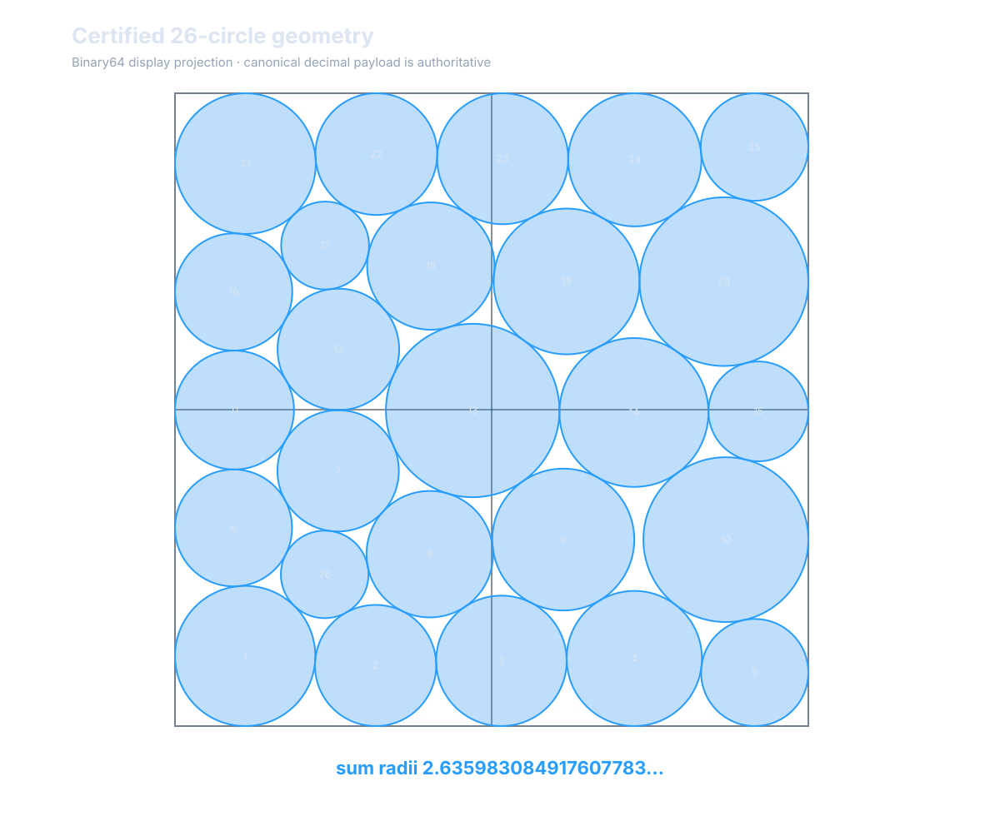

Original deterministic baseline
A sparse, feasible packing establishes the executable contract and the initial geometry.
0.959778Σ radii
Geometric optimization · Validated result
A deterministic geometry progressed through an original search and a seeded reconstruction campaign. The result is the validated packing—not the number of generations used to reach it.
2.63598326 circles
The accepted candidate deterministically reconstructs a tight contact system, validates containment and non-overlap, and matches the tracked public reference at six displayed decimals.
The accepted history separates the original search from the seeded continuation. Generation numbers remain in provenance, but the public story follows validated geometries and the relationship between campaigns.
A sparse, feasible packing establishes the executable contract and the initial geometry.
The original campaign discovers a high-radius geometry that becomes the seed for a later, explicitly separate continuation.
A reconstruction campaign refines the retained contact graph and returns the geometry only after deterministic validation.
The two campaigns did different work. The first discovered useful geometry; the second started from an accepted checkpoint and solved a more focused contact-system problem. Treating both as one uninterrupted generation count hides that distinction.
Generated candidates move from the sparse baseline into a tight, feasible packing and establish the contact structure worth continuing.
The continuation reconstructs and refines the accepted contact graph rather than restarting from the original sparse packing.
For this result, a percentage against the intentionally weak baseline is less informative than the final structure, numerical margins, deterministic replay, and comparison with the public reference.
Contacts with the unit-square boundary at the public tolerance.
Detected circle-to-circle contacts in the accepted packing.
Repeated calls reconstruct and validate the retained geometry.
The reported sum matches the tracked public value at displayed precision.

This result applies to 26 circles in the unit square under the published deterministic contract. It does not establish a general packing solver or a mathematical proof that no better packing exists.